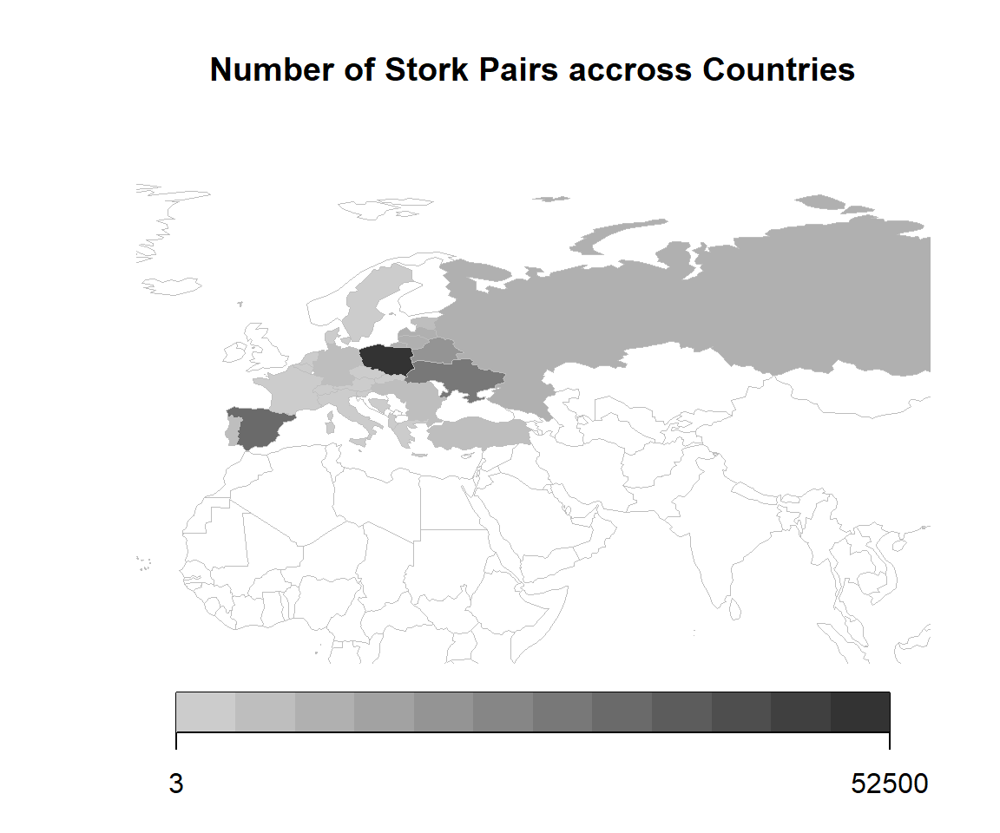

Chapter 7 Text Mining
Text data usually consists of documents which can represent words, sentences or even paragraphs of free flowing text. The inherent unstructured (no neatly formatted data columns!) and noisy nature of textual data makes it harder for data analysts to directly work on raw text data.
7.1 Field Trip to Berlin
On Thursday, 02 June 2022, the class went on a field trip to Humboldt Forum, Berlin to visit the exhibition Berlin Global. Get the virtual tour
Berlin Global feels very modern. It combines historical information and stories with modern art and design as well as interactive features. The interaction comes from decisions you can make yourself and interactive elements like a wheel that needs about 5 people to start a video sequence. It triggers interactions between visitors and people who are normally strangers who would not have interacted otherwise. It is educational and fun. Although it covers some of the darkest parts of history.

Students wrote down their impressions as in a diary entry or personal report and post them on tripadvisor. All reviews should address the following questions:
- How is globality represented in "Berlin Global"?
- How is the colonial past depicted in Room 1 "Weltdenken"?
At the time, the exhibition did not have any review on tripadvisor. Thus almost all reviews on tripadvisor stem from students of the class of 2022. We use this review data on tripadivsor to learn about the student experience.
7.1.0.1 Start Browser
library('DT')
library('tidyverse')
library('RSelenium')
# 4449L can use almost any port
# cannot use 2 port twice
rD <- rsDriver(port = 4888L, browser = c("firefox"))
remDr <- rD[["client"]]7.1.0.2 Navigate to Page
remDr$navigate("https://www.tripadvisor.de/Attraction_Review-g187323-d23632357-Reviews-Berlin_Global-Berlin.html")
Sys.sleep(5)
RSelenium Browser opening Tripadvisor.
7.1.0.4 Download html
library(rvest)
html <- remDr$getPageSource()[[1]]
html <- read_html(html)
xml2::write_html(html, "data/tripadvisor_page1.xml")7.1.0.6 Extract Reviews
# .wnNQG some other elements
# .KxBGd contains reviews and other stuff
# .yCeTE headlines and reviews
reviews <- html %>% # Name a variable reviews and take a look at the html
html_elements(".yCeTE") %>% # In particular, look at the class named .cPQsENeY / yCeTE / yCeTE / biGQs _P pZUbB KxBGd
html_text() %>% # Grab the text contained with this class .yCeTE
as_tibble() # And save it as a tibble to reviews.
# Extract headlines
headlines <- reviews %>%
slice(which(row_number() %% 2 == 1)) %>% # nice modulo operation
slice(1:(n()-1))
# Extract text
texts <- reviews %>%
slice(which(row_number() %% 2 == 0))7.3 Text Analysis
For this analysis we focus on the intro information on R from English Wikipedia.
library(wikifacts)
R_EN <- wiki_define('R (programming language)')
R_EN
#> R (programming language)
#> "R is a programming language for statistical computing and graphics supported by the R Core Team and the R Foundation for Statistical Computing. Created by statisticians Ross Ihaka and Robert Gentleman, R is used among data miners, bioinformaticians and statisticians for data analysis and developing statistical software. Users have created packages to augment the functions of the R language.\nAccording to user surveys and studies of scholarly literature databases, R is one of the most commonly used programming languages used in data mining. As of March 2022, R ranks 11th in the TIOBE index, a measure of programming language popularity, in which the language peaked in 8th place in August 2020.The official R software environment is an open-source free software environment within the GNU package, available under the GNU General Public License."7.3.0.1 Cleaning
Load the tidytext package. We summarize individual tasks like removing digits, punctuation, whitespaces and seting everything to lower case in the clean_text() function. There is a newline operator \n left. You can replace it with uncommenting the last command.
library(tidytext)
## text cleaning
clean_text <- function(x) {
x %>%
## Remove digits
str_remove_all("[:digit:]") %>%
## Remove punctuation
str_remove_all("[[:punct:]]") %>%
## Make everything lowercase
str_to_lower() %>%
## Remove any trailing whitespace around the text
str_trim("both") ##%>%
##str_replace_all("[\r\n]" , " ")
}#> [1] "r is a programming language for statistical computing and graphics supported by the r core team and the r foundation for statistical computing created by statisticians ross ihaka and robert gentleman r is used among data miners bioinformaticians and statisticians for data analysis and developing statistical software users have created packages to augment the functions of the r language\naccording to user surveys and studies of scholarly literature databases r is one of the most commonly used programming languages used in data mining as of march r ranks th in the tiobe index a measure of programming language popularity in which the language peaked in th place in august the official r software environment is an opensource free software environment within the gnu package available under the gnu general public license"7.3.0.2 Tidytext Format
Tidy data has a specific structure:
- Each variable is a column
- Each observation is a row
We thus define the tidy text format as being a table with one-token-per-row. A token is a meaningful unit of text, such as a word, that we are interested in using for analysis, and tokenization is the process of splitting text into tokens.
tidytext <- R_EN_clean %>%
as_tibble() %>%
unnest_tokens(word, value) %>%
count(word, sort=TRUE)
head(tidytext)
#> # A tibble: 6 × 2
#> word n
#> <chr> <int>
#> 1 the 10
#> 2 r 8
#> 3 and 6
#> 4 in 5
#> 5 of 5
#> 6 is 47.3.0.3 Stopwords
Stop words are a set of commonly used words in a language. Examples of stop words in English are “a”, “the”, “is”, “are” and etc. Stop words are commonly used in Text Mining and Natural Language Processing (NLP) to eliminate words that are so commonly used that they carry very little useful information.
data(stop_words)
tidytext <- tidytext %>%
anti_join(stop_words)
head(tidytext)
#> # A tibble: 6 × 2
#> word n
#> <chr> <int>
#> 1 language 4
#> 2 data 3
#> 3 programming 3
#> 4 software 3
#> 5 statistical 3
#> 6 computing 2
7.4 Little bit of Scraping
library(rvest)
read_html("https://en.wikipedia.org/wiki/R_(programming_language)") %>%
## extract paragraphs
html_nodes("p") %>%
## extract text
html_text() %>%
## clean
clean_text() %>%
as_tibble() %>%
## tidy text
unnest_tokens(word, value) %>%
count(word, sort=TRUE) %>%
## stopwords
anti_join(stop_words) %>%
## select first
top_n(20) %>%
## reorder
mutate(word = reorder(word, n)) %>%
## create frequency plot
ggplot(aes(x=word, y = n)) +
geom_col() + coord_flip() +
ggtitle("Term Frequency of top 20 clean words in Wikipedia aRticle")